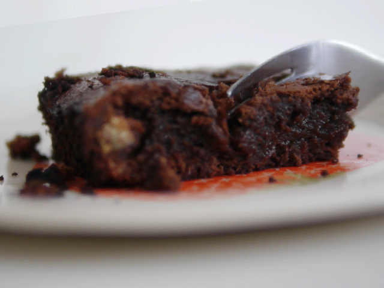

Brownie de chocolate con nueces

Bienvenidos a Paulina Cocina! Hoy les traigo la mejor receta que puede tener un blog de cocina: cómo hacer Brownie de Chocolate con nueces y casero! El brownie de chocolate de ser una de las mejores cosas que existen, te inyecta una cantidad increíble de endorfinas cuando lo comes.
Esta es una receta de brownie de chocolate clásico, o una receta base. Es decir, que después pueden hacer lo que quieran con ella. Lo idea en pastelería es respetar siempre las cantidades, porque una alteración en alguna de ellas puede ser desastroso y más cuando trabajamos con chocolate.
Ingredientes
para un brownie grande
- 100gr de manteca
- 150gr de chocolate
- 2 huevos
- 1 taza de azúcar
- 1/2 taza de nueces picadas
- 100gr de harina
Preparación
- Para comenzar con nuestra receta de brownies de chocolate, vamos a colocar la manteca y el chocolate picados en una sartén, y llevarlos a fuego bien bajo. Lo tapamos y vamos a dejarlo por unos 5 minutos sin tocar. Confíen!
- Ahora retirar del fuego y revolver los ingredientes hasta que esté todo derretido e integrado.
- A parte vamos a batir los 2 huevos con el azúcar hasta que queden bien blancos, esto es clave para que el brownie casero quede bien húmedo.
- Agregar el chocolate derretido y batir hasta que esté integrado. Sumar las nueces en pedazos grandes o como más les guste.
- Sumar el harina 0000 tamizada en dos partes e integrar todo. Es importante batir fuerte antes de pasar el brownie de chocolate al molde.
- Colocar en una placa y cocinar al horno fuerte (200-220°) por 20 minutos.
Es mejor sacarlo antes y si lo queremos más cocido volver a colocarlo en el horno unos minutos más. Lo importante es no pasarse para que el brownie no quede seco.